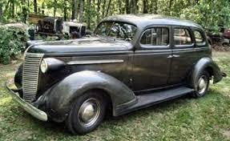

[NOTE ON FOOTNOTES: If you go to a footnote, at the end of the footnote there will be a "back-link" character, '↵,' as a return link. Click on that and it will return you to where you came from -- no need to scroll back thru countless paragraphs. The back-link should work with screen readers too.]
The target audience for this chapter, is descendants of my parents. Anyone is welcome to read it, but it may not interest the general public.]
MY FATHER -- Walter F. Thompson, Sr. (1893 - 1973)
Manual Slideshow - Click on arrows


I see my father as complicated, but perhaps all people are complicated if you know them well. He had an unfortunate childhood that left him scarred. He was verbally abusive to my siblings and me, and took his razor strap to my older brothers, but "mellowed" with each child and became a loving grandfather. He lived in a world of simple, but rather rigid, distinctions. People were either "good" or "bad." One transgression by a friend of decades was unforgivable -- they were crossed off his list.
A neighbor from Ireland used to say "He hangs his fiddle outside the door." I think meaning that he was convivial with his coworkers and fishing buddies, but distant from his family.
Walter Frederick Thompson, Sr.,was born in 1893, in Plattsburgh, NY to a tubercular, violinist, immigrant father, who died when dad was two and had no memories of; and a nurse mother, whom he didn't know well. When she was widowed with two young children, she left them in the capable hands of her mother, and moved to Williamsport, PA to work at the hospital she had graduated from, and to live with an older sister, Mary Jane (Bulley) LaBelle.
Dad and his older brother, Maurice were raised on a farm, by grandparents they loved. His grandmother was born in this country, to a French speaking family (they were near the border with Quebec). His grandfather, born Michel Boulé in Canada but reportedly renamed Mitchel Bulley by the Sergeant that mustered him into the Union Army. The family spoke French at home and attended a church with a French speaking priest who gave the homily in French. "Gram," as he called her, had 11 children of her own, and raised 3 grandchildren: dad, his brother, and their first cousin, Harmon Bulley, who was 7 years younger. Those were reasonably happy years, altho his immigrant grandfather (who had had been wounded in three battles, survived two Confederate POW camps and had a wooden leg) was quite strict. But he felt loved. However, when dad was about twelve, his mother married a doctor, George C. Burnley, and dad & Maurice joined their mother and step-father, who had just moved to a home in Nelson, PA.
That was not a happy home. According to my father, their new step-father was an alcoholic who beat both boys and their mother when he was drunk. He and Maurice never forgave their mother for taking them from their grandparents. After four years she died. But before that, he and his brother had been practicing boxing so that one day they could defend themselves. I think when he was about 14 and Maurice was 15, their stepfather started to beat them, but they successfully fought back, beat him up, and ran away from home. But not before he met my mother.
At the time, local school districts only had to provide education to 8th grade. That was the end of dad's formal education, but he was an avid reader and knew history quite well.
When he was old enough, he joined the navy, and became a machinist on board a primitive submarine of the day. The US Navy's experimental designs of the K-series
of subs were more dangerous to their crews than to enemy ships. The K-subs didn't see combat, but were used for patrolling coasts.
We no longer have a photo of his boat (subs are 'boats,' not 'ships'), but I think he served on the K-5. They were used primarily for the Navy to figure out submarine tactics. I know he was stationed in Pensacola, FL. He used one leave to make a visit to Nelson, as a suitor. He apparently made a dashing figure in his uniform - enhanced by playing a mandolin. [He didn't "swear like a sailor." The only times I heard him swear was when hanging wall paper. Usually he relied on phrases such as "dagnabbit," "fiddlesticks," "hell's bells," or "Jehoshaphat's ghost."]
He was injured when an explosion (or fire) happened in the engine room and he took a discharge well before the US joined WW1. They married in 1916, after mom finished her 3rd year at Mansfield Normal School (which was all that was required for secondary school certification).
He set some good examples for us: honesty, hard work, civic responsibility and the value of craftsmanship. I don't remember him ever saying it, but he clearly believed that children were to be seen, but not heard. His factory shift worked from 6 AM to 3 PM, so he would go to bed early. And thump on the bedroom floor with a shoe if we were noisy. If that didn't quiet us long enough, he would wrap himself in a blanket (he didn't wear pajamas), come down the stairs far enough to be visible and GLARE. He had no need to say anything. And his glares were more eloquent than anything he could have said. He has a special one for every occasion.
He had a stoic outlook and admired the Spartan boy's stoicism.
One of the most famous stories of Spartan discipline was about a boy who found a fox cub, which he planned to eat. When he saw his instructor approaching, the boy hid the fox inside his garment to avoid being caught. As the instructor questioned the boy, the fox began to claw and bite within the folds of the boy's tunic, yet the boy did not cry out. According to the legend, it was only when the boy fell dead to the ground with his stomach bitten through that the instructor realized what had happened.
(That's not my idea of behavior to emulate.)
He raised us on maxims I can still hear, echoing around in my brain.
- "Better to be thought a fool than to speak up and remove all doubt."
- "You get what you pay for."
- "Say what you mean & mean what you say."
- "A place for everything and everything in its place."
- Bragging was a no-no -- "Don't toot your own horn." And feeling sorry for yourself was a no-no too.
If we said "That's not what I meant to say, the inevitable response was "Then why did you say it?" And long before my time he would ridicule Tom in front of the whole family by referring to Tom as "That damned fool." He never struck me (only threatened to). As I mentioned earlier, he took his razor strap to my brothers and his leather slipper to spank my sister. My mother used her hair brush to spank me.
He was something of a misogynist. When my mother would have a group of women over, that was a "hen party." And the attendees were "biddies" or "battle axes." But he also had pejoratives to describe males: "blowhard," "stuffed shirt," or in the case of my father-in-law - "weak sister." (That was for crying at his daughters' weddings, something he felt no "|real man" would do.) And gender neutral put-downs such as "holy roller." As you can see, he could be very judgemental.
He wanted us to grow up with excellent grammar and good manners, especially table manners. Some what incongruously, in order to teach us not to put our elbows on the table, offending elbows were subject to being jabbed with his fork.
He was industrious. An excellent vegetable gardener, diligent pruner of grapevines, berry bushes, shrubs, etc. Replaced a long, laid field-stone front walk with one where the field-stones were set in concrete, carefully prepared gravel underneath. Built a large, stone fireplace in the back yard for grilling for picnics -- it even a range top. He did home repairs of all sorts and was especially proud of his painting skills; - mowing the meadow with a scythe; spending hours on his hands and knees, hunting errant dandelions with an old table knife to remove their roots (a custom I continued). And of course, tools were cleaned and put away. "Take care of your tools and they'll take care of you." During WW2, when Detroit wasn't making cars, dad did a great job of keeping our family Nash LaFayette running.
He appreciated nature, but seemed to need a fishing pole or a gun in hand as an excuse to go for a walk. He would often take the family for a Sunday drive to see scenic views or when the fall colors were at their peak. Often my mother would pack a picnic lunch
In politics, like all family members of Civil War veterans, he was a Republican. He had no use for Harry Truman, whom he considered "vulgar." He was comfortable with Republican "liberals," such as Nelson Rockefeller and Jacob Javits. But he did finally bring himself to vote for a Democrat for mayor -- who happened to be the brother of a family friend.
He had no patience with religiosity of politicians who "wrapped themselves in the flag." He derisively referred to them as "200% Americans." Speaking of religion, he believed in God and an afterlife (and Providence), and was a close friend of our minister, sang in the church choir (he had a good bass voice) and would say grace for occasions such as Thanksgiving, but he wasn't "churchy." I think he mostly went because that's just what one did. Theology or doctrinal points had no interest for him (nor for me).
He loved music, and if possible, never missed a performance of "Saturday at the Met." He had no interest in dance, and not much in art.
He wasn't good at managing money, it tended to burn a hole in his pocket and there was always a new fishing reel or rod that he coveted.
Speaking of fishing, he enjoyed telling tall tales about fishing. He didn't consider it lying, because the listener should have know better that to give credence to preposterous stories. (Nor did he consider omissions as lying. Only what you actually said counted.) Some of his tall tales were quite long (as were the fish that got away). One of the shorter ones was abut the fishermen out on a lake. "They caught so many fish that the level of the lake went down so much that they ran aground and had to walk all the way to shore, carrying as much of the catch as they were able to." (Inspired by such stories I once told one of my grandchildren, who liked to watch ducks and geese on a lake "It rained so much one day that the water level in the lake rose, leaving only the geese' heads still above water") Anyone who didn't recognize "whoppers" for what they were was "a damned fool." He did like "pulling people's leg" and had a dry, wry, sense of humor.
His favorite jokes to tell had punch lines that listeners had
to supply for themselves. E.g.
"What's the difference between a
cross-eyed hunter and a constipated owl?"
"The cross-eyed hunter can't hit when he
shoots."
The listener was on his/her own to figure out the punch line.
He was a perfectionist, who had high standards for everyone, himself included. Standards that were impossible for any child to meet. We became quite expert at interpreting his scowls and varied looks of disapproval. I hope his grandchildren encountered approval, but his children didn't. No matter how hard we tried, nothing we could do was ever "good enough."
To his credit, he tried to teach me how to bowl, one of his favorite indoor activities. He showed uncharacteristic patients in showing me how to hold the ball, to walk with it, release it, etc. I vividly remember one occasion. I almost threw a strike. One pin wobbled a while, but stubbornly remained upright. After the pins had been reset, and I was preparing to throw my 1st ball, he carefully showed me how to position my hand and wrist -- just so. I observed carefully, tried hard to remember all the fine points, really concentrated in following his instructions -- and rolled a strike. I was elated and hoped for some sign of approval. But as I returned, all he said was "Now the next time, you need to hold your wrist more ..." Even throwing a strike wasn't good enough. :(
But he could be supportive. Especially when it came to my efforts to free myself from my mother's over protectiveness. I had picked up a lot of wilderness skills in Boy Scouts and Explorer Scouts and was anxious to lead "expeditions" to the Adirondaks with myself and one or more classmates. He was always an ally on winning approval for such trips, and always was willing to chauffeur either the drop-off trip or the pick-up trip. Initially they were for one week, later for two. I was very emotionally immature, but my hiking, canoeing, camping, and navigating skills were advanced. The trips all went fine.
He wasn't anti-social. He played board games and especially enjoyed playing cards -- hearts, pinochle (he was very good at that), canasta or other rummy games -- but not bridge. We would often play at home evenings. And on Friday or Saturday nights, they would get together with friends for two or three tables of whatever.
He didn't like my mother trying new recipes. Often he would refuse to try the dish. He would pointedly leave the table (often taking his dishes with him, making a bowl of bread and milk and either eating it in the kitchen, standing up, or sometimes, bring the bowl back to the dining room table and eat it there.
He was very supportive of my sister when her first husband would misbehave. She (and her son) were always welcomed back, to stay as long as needed. He made it very clear to his son-in-law that anything he did-unto-her would be done-unto-him -- with interest. No one considered those warnings as empty threats. He never begrudged those "refugee" visits. My parents had opposed the marriage. One night, prior to the marriage, my parents, sister and I (the whole household at the time except for my grandmother, who I think had gone to bed, discussed her choice. My sister was 30, and I was an almost grown-up (I thought) 14. I defended my sister as being old enough to make her own decision on such an important issue. My father said, "Shut up and sit down or I'll knock you down." So I did. I don't recall what else was said, but obviously she did marry George.
Which brings me to dad's grand-parenting. I'm confident that I was a better father than he was, but he may have been a better grandfather than I was. He didn't like his son-in-law (for cause), but didn't take that out on his grandson. However, he intensely disliked one daughter-in-law (also for cause) and took it out on his granddaughter (mostly by ignoring her). My mother took him to task. "Walter, you're not being fair." (Calling him 'Walter' was a sure sign of a lecture.) It's not your granddaughter's fault who her mother is. She's a victim, not a perpetrator. Stop being mean to her." And he did. He liked both grandchildren (and three more who came along later) and treated them with consideration and kindness. He did evolve.
I mentioned in a previous chapter that he chewed tobacco, usually Five Brothers pipe tobacco. Sometimes he would light up a pipe of it, but usually he chewed it instead. Nicotine is a good herbicide, so in his war on dandelions, he often would target them when he spat. His aim was pretty good, especially when tossing popcorn or peanuts into the air above his head, tipping it back and catching the popcorn kernel or peanut in his mouth. (But not while chewing tobacco.)
As he aged, he did not "go gentle into that dark night." He had a series of heart attacks, but did not want to follow the doctors' advice about changing his diet or being less active. "That's not living." (I couldn't understand at the time, but do now.) He didn't quite get his wish of "dying with his boots on." He had another serious heart attack but survived and was going to be discharged. I visited him at the hospital and planned to talk with a nurse about whether he would be discharged that day or the next. He was sitting in an easy-chair and we were chatting about his release, when suddenly he had convulsions and collapsed. I yelled "Nurse, nurse", but it was a massive coronary and he died before the staff could arrive -- even though they came running. He would not have wanted to survive as an incapacitated invalid -- he would have felt "a burden."